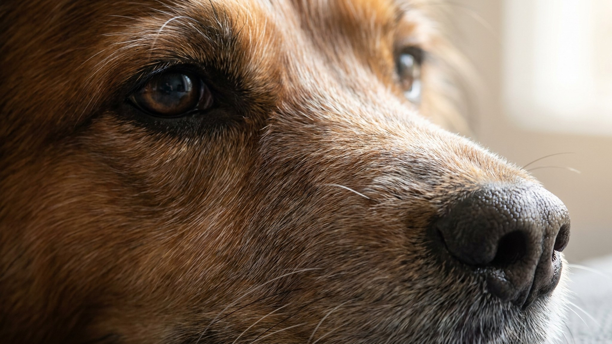

Собаки — потомки диких предков, которые скрывали слабость, чтобы выжить в стае. Этот инстинкт никуда не делся: пёс будет держаться, пока боль не станет по-настоящему сильной. К тому моменту проблема часто успевает зайти далеко. Ниже — 7 поведенческих изменений, на которые стоит обращать внимание, и чёткое правило: когда не ждать и идти к ветеринару.
🐾 Первая помощь — всегда под рукой
AnimaLife подскажет, что делать в тревожной ситуации с питомцем ещё до визита к врачу. Откройте в один тап.
Пёс, которому раньше не терпелось запрыгнуть в машину или взбежать по лестнице, вдруг медлит, обходит ступени стороной или садится и смотрит снизу вверх. Это не лень и не каприз. Когда собака начинает избегать движений, которые раньше давались легко, она сообщает: что-то причиняет дискомфорт. Следите за тем, что изменилось в привычном распорядке дня.
Небольшая хромота, осторожность при укладывании, непривычная поза в покое — всё это поведенческие маркеры. Пёс может начать ложиться медленнее, вставать с усилием, переносить вес на другую сторону. Иногда изменение заметно только в движении: пёс немного подволакивает лапу или несёт голову чуть иначе. Такие мелочи легко списать на «поигрался», но если картина повторяется изо дня в день — это сигнал.
Собака часами занимается одной точкой на теле — лапой, боком, суставом. Никакой видимой причины нет: нет ранки, нет репейника. Вылизывание — универсальный способ собаки реагировать на боль или напряжение в конкретной зоне, даже если снаружи всё выглядит нормально. Если эпизоды повторяются, покажите это место ветеринару.
Пёс не может найти удобную позу, встаёт несколько раз за ночь, скулит без видимой причины или дышит тяжелее обычного — прямо в тепле, без физической нагрузки. Нарушения сна и учащённое дыхание в покое входят в число сигналов, на которые ветеринары советуют обращать особое внимание: они труднее поддаются «самообъяснению» и чаще оказываются значимыми.
Собака стала равнодушна к любимому лакомству или не реагирует на мяч, который раньше выводил её из себя от радости? Снижение аппетита и потеря интереса к игре — частые спутники дискомфорта. Важно: сам по себе один пропущенный обед — не повод для паники. Но если апатия держится несколько дней подряд, это уже картина, которую стоит обсудить с врачом.
Пёс огрызается в ответ на прикосновение — особенно к определённому месту. Или наоборот: тихо уходит в дальний угол, не хочет компании, не реагирует на зов. Оба варианта — нетипичное поведение для конкретной собаки — могут быть её способом сказать «мне нехорошо». Изменения в характере без очевидной причины (смена обстановки, стресс) заслуживают внимания.
Собаки в норме регулярно чистятся и следят за собой. Если пёс перестал вылизывать лапы после прогулки, выглядит «растрёпанно», шерсть потускнела — это может говорить о том, что ему некомфортно принимать позы, нужные для груминга. Небольшое, но устойчивое изменение во внешнем виде без других объяснений стоит взять на заметку.
🐾 Экономьте на лишних визитах к врачу
Сначала спросите AI-ветеринара в AnimaLife — часто этого достаточно, чтобы понять, нужен ли визит к врачу.
🐾 Понравился разбор?
Подпишитесь на канал — каждый день разбираем по одному тревожному симптому у кошек и собак: что в пределах нормы, а когда пора к врачу. Подпишитесь, чтобы не пропустить разбор, который может спасти здоровье вашего питомца.
Практичное правило: любое новое устойчивое изменение в поведении собаки, которое держится 2–3 дня и не объясняется очевидной причиной — достаточный повод для осмотра у ветеринара. Не нужно ждать, пока пёс станет явно хромать или перестанет есть совсем. Чем раньше специалист посмотрит на животное, тем больше вариантов у врача и тем проще решение.
Материал носит информационный характер и не заменяет очную консультацию ветеринара.